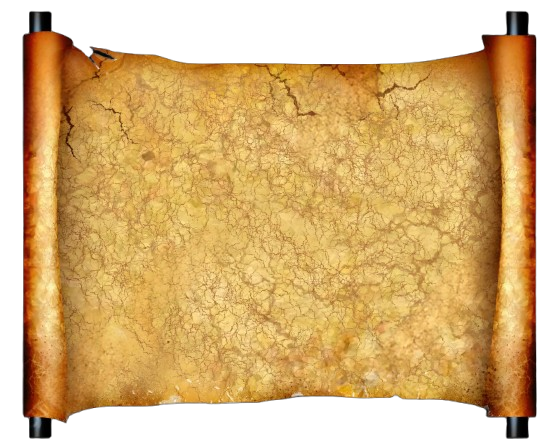

Toko Masakan Jawa Rasa Nusantara berdiri pada tahun 2005 di sebuah
sudut sederhana di Kota Yogyakarta.Terinspirasi oleh resep-resep
turun-temurun dari keluarga, mereka mulai memasak dan menjual
masakan khas Jawa seperti gudeg, opor ayam, rawon, tempe bacem, dan
sayur lodeh kepada tetangga dan kerabat sekitar. Berbekal cita rasa
otentik dan harga yang terjangkau, toko kecil tersebut mulai dikenal
luas. Dalam waktu dua tahun, mereka mampu membuka warung makan kecil
yang selalu ramai dikunjungi oleh mahasiswa, pekerja, dan wisatawan.
Pelayanan yang ramah dan masakan yang selalu segar membuat Rasa
Nusantara menjadi pilihan utama pencinta kuliner tradisional Jawa.
